One morning in Kanniyakumari, Tamil Nadu, 12-year-old Rashmika was cycling to school. She had been noticing that the coconut tree shadows were long in the morning but shorter in the afternoon. She thought the Sun moved across the sky. But she also remembered that the Earth moves around the Sun (from Grade 6). She wondered — does the Sun move in the sky? Or does the Earth move?
🔄 12.1 Rotation of the Earth
Why does the Sun rise in the East and set in the West?
🎠 Activity 12.1 — Let us explore (Merry-go-round)
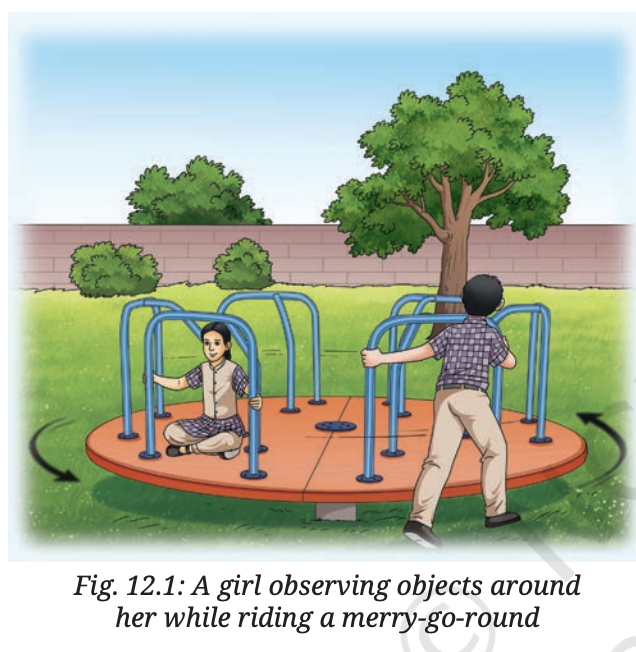
Fig. 12.1 — A girl observing objects around her while riding a merry-go-round
Sit on a merry-go-round facing towards the outer side.
Ask someone to turn it slowly in the anti-clockwise direction.
While you turn anti-clockwise, the objects around you appear to move in the opposite (clockwise) direction.
Fix your gaze at a tree — it appears in your view from the left-hand side and moves out on the right-hand side.
🔑 Conclusion: When we view from the Earth, the Sun appears to move East → West. This is because the Earth itself is rotating — the Sun only appears to move!
🌀 Earth Spins Like a Top
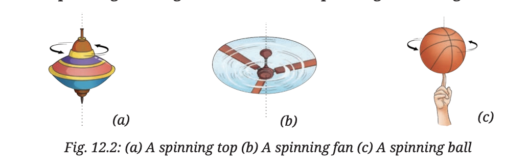
Fig. 12.2 — Objects that spin on their own axis — (a) Spinning top (b) Fan (c) Ball
In a similar manner, the Earth also spins (rotates) on its own axis in space. The Earth's axis of rotation passes through its geographic North Pole and the South Pole. The Earth completes one rotation in about 24 hours. When viewed from the top of the North Pole, the Earth rotates in the anti-clockwise direction — that is, from West to East.
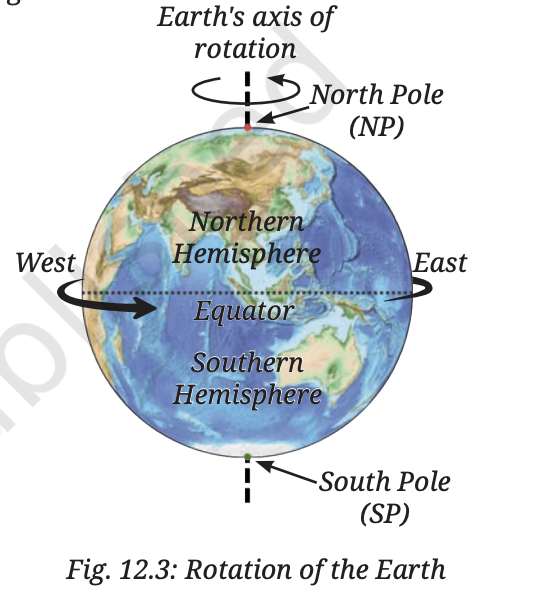
Fig. 12.3 — The Earth rotating on its North–South axis (anti-clockwise when viewed from North Pole)
🔦 Activity 12.2 — Globe and Torch (Day & Night)
Use a globe to represent the Earth. Place a small sticker to mark your location.
Viewing from above the North Pole, slowly rotate the globe anti-clockwise.
Use a torch as the Sun in a dark room, placed ~1.5 metres away.
Shine the torch on the globe — notice how half the globe receives light (day) and the other half stays dark (night).
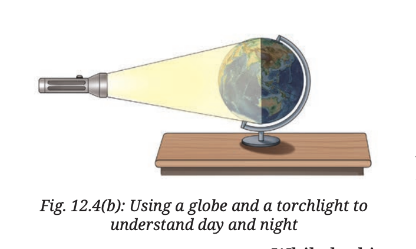
Fig. 12.4b — Globe lit by torch
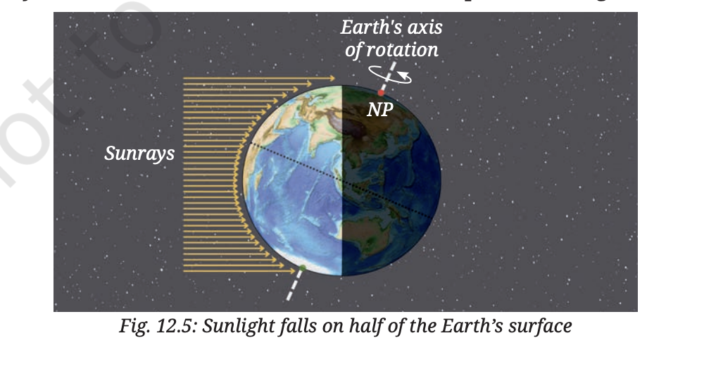
Fig. 12.5 — Day and night: one side faces Sun, other side is dark
🔑 The light falls on the eastern part of India first when the globe rotates from West to East. The Earth's rotation from West to East causes the day-night cycle. Sunrise occurs as your location moves into light; sunset occurs as it moves into darkness.
🌍 Sun's Apparent Motion — as seen from the Equator
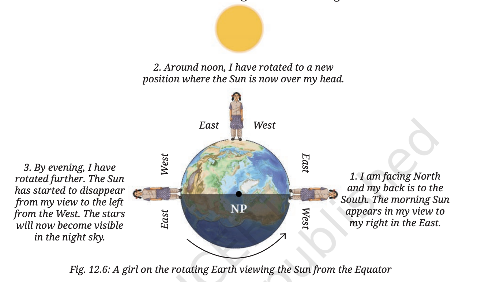
Fig. 12.6 — A girl on the rotating Earth viewing the Sun from the Equator
🌅
Morning Sun appears in the East (to my right, facing North)
☀
Noon I have rotated — Sun is now over my head
🌇
Evening Sun disappears from the West (to my left). Stars become visible.
Due to the rotation of the Earth, the Sun appears to rise in the East, move across the sky from East to West, and set in the West. Then night begins and stars become visible.
💡 Fascinating Facts — Foucault Pendulum
In the 17th century, Huygens used properties of a pendulum to make pendulum clocks. In the mid-19th century, Léon Foucault used a long pendulum to give the first simple demonstration of the Earth's rotation. The pendulum is called a Foucault pendulum — it has a long string with a heavy bob, suspended from a high ceiling.
🏛 A Foucault pendulum of 22 metres has been hung from a skylight in the Constitution Hall of the new Parliament building in New Delhi, India. It symbolises the integration of the idea of India with the vastness of the cosmos.
⭐ Activity 12.3 — Big Dipper & Pole Star (Night Observation)
On an early evening between March and May, identify the Big Dipper (Saptarishi) and the Pole Star (Dhruva Tara).
Note your location and date. Draw the orientation of the Big Dipper with respect to the Pole Star (Fig. 12.7). Mark the time.
After two hours, observe the Big Dipper again. Has it moved? Draw again and note the time.
Repeat after two more hours.
🔑 The Big Dipper appears to move around the Pole Star over the night. The Earth's axis of rotation points very close to the Pole Star in the Northern Hemisphere — so the Pole Star appears nearly stationary. All other stars appear to move around it — just like the Sun, they appear to rise in the East and set in the West because Earth rotates West to East.
💡 Fascinating Facts — Star Trails
Astrophotographers take long exposure photographs, keeping the camera shutter open for a long time. In such a photograph, the apparent motion of the stars is recorded as arcs of a circle — known as star trails. (Picture taken from Mahuli, Maharashtra)
💡 Fascinating Facts — Aryabhata
Ancient Indian astronomers, including Aryabhata, had noticed the daily apparent motion of celestial objects. Aryabhata was a famous mathematician and astronomer who wrote the important treatise Aryabhatiya around the fifth century CE. The apparent motion of stars due to Earth's rotation is explained in Verse 9, Golapada, Aryabhatiya:
"Just as a man in a boat moving forward sees stationary objects as moving backwards, so also the stars that are stationary are seen by people of Lanka as moving towards the west."
Aryabhata's value for one full rotation of the Earth: 23 hours 56 minutes 4.1 seconds — impressively close to the currently accepted value!
🔁 12.2 Revolution of the Earth
Earth revolves around the Sun — different from rotation
🌍 What is Revolution?
While rotating on its own axis, the Earth also revolves around the Sun. Revolution is the motion of an object around another object. The path an object takes while revolving is called its orbit. The orbit of the Earth around the Sun is nearly circular (as seen from the top). The Earth completes one revolution in about 365 days and 6 hours.
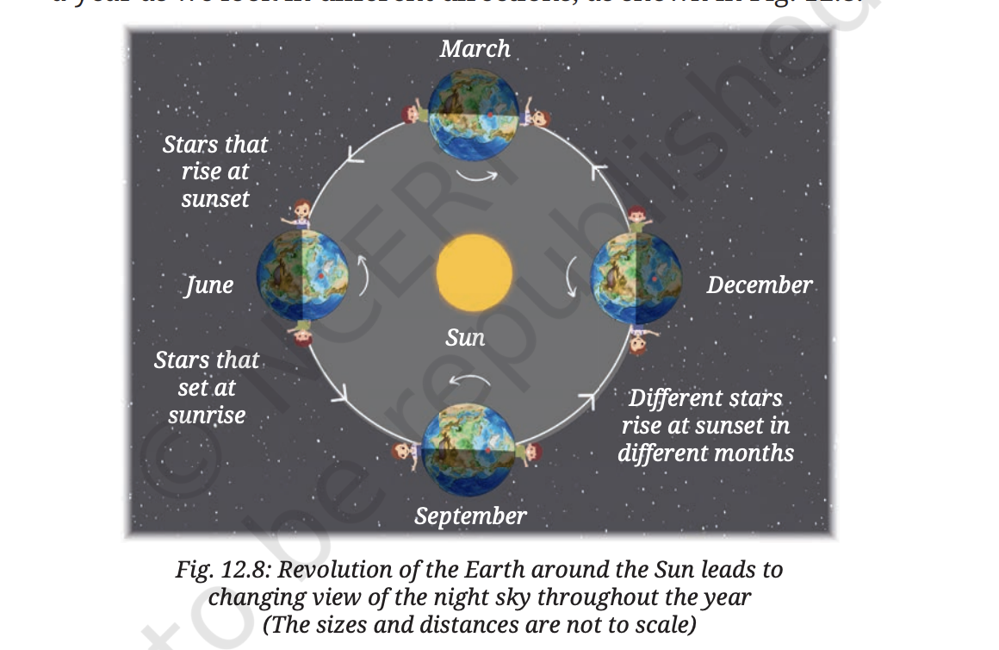
Fig. 12.8 — The Earth revolves around the Sun in a nearly circular orbit; the stars visible in the night sky change over the year
🌌 12.2.1 Changing View of Night Sky
Every evening the Sun sets in the westward direction and the night sky becomes visible. As the Earth also revolves around the Sun continuously, the stars seen in the night sky after sunset gradually change over a year — because we are always looking in different directions (Fig. 12.8). You can notice this change by looking at star patterns at a fixed time of the night, on days separated by a month.
🌞 Seasons — Tilt of the Earth
Why do we have summer, winter, and other seasons?
🌐 Earth's Axis is Tilted
The Earth's axis of rotation is not upright with respect to its orbit, but is tilted. The Earth maintains this tilt as it orbits around the Sun (Fig. 12.9). The tilt of the Earth's axis and the spherical shape of the Earth give rise to seasons.
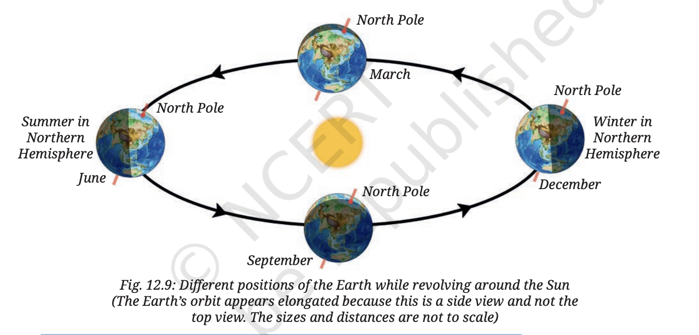
Fig. 12.9 — The Earth's tilted axis maintains its direction as it orbits the Sun
☀ How Tilt Causes Seasons
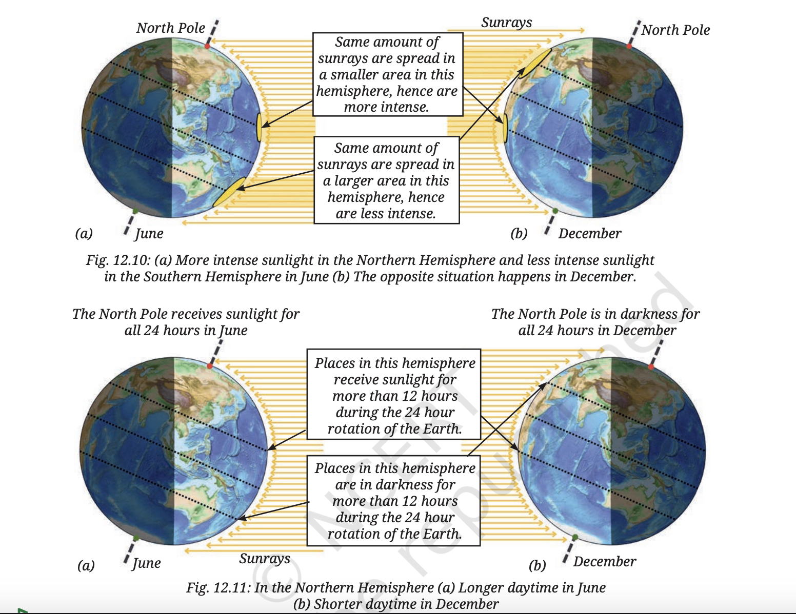
Fig. 12.10 & 12.11 — Sunlight intensity and hours of sunlight in June and December
☀ June — Summer in Northern Hemisphere
Northern Hemisphere tilted towards the Sun
Sunrays spread over a smaller area → more intense heat
Sunlight received for more than 12 hours
Result: Summer in Northern Hemisphere
Southern Hemisphere has winter at this time
❄ December — Winter in Northern Hemisphere
Northern Hemisphere tilted away from the Sun
Sunrays spread over a larger area → less intense
Sunlight received for fewer than 12 hours
Result: Winter in Northern Hemisphere
Southern Hemisphere has summer at this time
🌏 On the Equator: There is always 12 hours of sunlight and 12 hours of darkness. There is little difference in sunray intensity across months. So for southern states of India (close to the equator), the effect of seasons is not very prominent.
🌑 12.3 Eclipses
When one celestial body blocks sunlight from reaching another
The planets Mercury and Venus revolve between the Earth and the Sun. But they appear very small compared to the Sun and never block the entire light from the Sun reaching us. However, the Moon can do that! The Moon is a natural satellite of the Earth and it revolves around the Earth as the Earth revolves around the Sun.
☀ 12.3.1 Solar Eclipse
When the Moon blocks sunlight from reaching the Earth
👍 Activity 12.4 — Thumb and Friend (Apparent Size)
Ask your friend to stand 5 metres away. Consider their head to be the Sun.
Close one eye and show a thumbs up with your outstretched hand towards your friend.
You can cover the entire head of your friend with your thumb, even though your thumb is much smaller!
🔑 The apparent size of any object depends on both its physical size AND its distance from you. The Moon is much smaller than the Sun — but the Moon is also much closer to Earth. So their apparent sizes are similar when viewed from Earth, and the Moon can appear to cover the entire Sun!
🔭 Why Planets Can't Block the Sun — Transit of Venus
Though Mercury and Venus are much larger than the Moon in size, they are also much farther from Earth. So their apparent sizes are very much smaller than the Sun — they cannot block it. When Venus passes between the Sun and Earth, it appears as a tiny black dot passing against the bright face of the Sun. This event is called a Transit of Venus — it is a rare event.
🌑 How a Solar Eclipse Happens
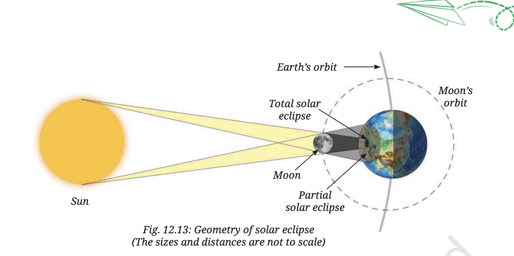
Fig. 12.13 — Arrangement of Sun, Moon, and Earth during a solar eclipse
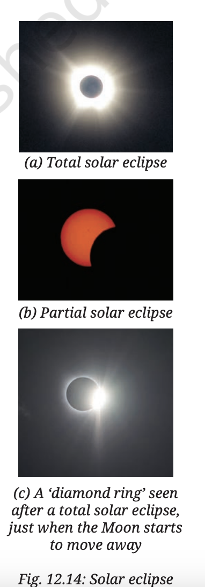
Fig. 12.14 — (a) Total solar eclipse (b) Partial solar eclipse (c) Annular solar eclipse
🌑 Total Solar Eclipse
Area is in total darkness — no part of the Sun can be seen. Lasts only a few minutes. Shadow moves across the Earth due to Earth's rotation and Moon's orbit.
⛅ Partial Solar Eclipse
Moon partially blocks some regions of the Sun. Daylight is reduced but not fully blocked. Visible in a larger area than total eclipse.
⚠ Caution — Safe Viewing of a Solar Eclipse
During a solar eclipse, one might be tempted to look at the Sun thinking it is safe. This is WRONG! Even during the eclipse, the Sun is intense enough to damage the eyes and cause blindness.
Do NOT look directly at the Sun during a solar eclipse.
Do NOT view it through sunglasses, binoculars, or telescopes.
✅ Best way: Participate in events held by astronomy organisations, planetaria, and astronomy clubs (Fig. 12.15) — they provide specialised eye protection and scientific explanations.
✅ A mirror projection can also be used — a mirror projects an image of the Sun onto a wall. (Under teacher supervision only.)
📜 Eclipses in History
People have observed eclipses and maintained records since ancient times. When the reasons were not known, they feared eclipses — something blocking the main source of heat and light was extremely concerning. Many superstitions were attached to solar eclipses (not eating, cooking, or going out). But now that we know the reason, we need not fear these events — as long as we do not look at the Sun directly. In fact, scientists go around the world to observe eclipses as they provide an opportunity to study phenomena that cannot be observed otherwise.
🌿 Science and Society — Stellarium App
Using the computer version of Stellarium app, which is free, you may get information about upcoming solar and lunar eclipses (if any) visible from your location.
💡 Fascinating Facts — Kodaikanal Solar Observatory
The Kodaikanal Solar Observatory is located in the beautiful Palani range of hills in southern India. It was established in 1899 and has provided data about the Sun for over 100 years. It is operated by the Indian Institute of Astrophysics (IIA), Bengaluru.
🔭 Know a Scientist — M.K. Vainu Bappu
M.K. Vainu Bappu is known as the father of modern Indian astronomy. He led efforts in setting up many instruments and telescopes in India, such as the telescopes at Manora Peak near Nainital (Uttarakhand) and Kavalur (Tamil Nadu). The observatory at Kavalur has been named after him. He mainly studied stars, discovered a comet, and also travelled to different parts of the world to study solar eclipses.
🌕 12.3.2 Lunar Eclipse
When the Earth blocks sunlight from reaching the Moon
🌍 How a Lunar Eclipse Happens
As the Moon revolves around the Earth, sometimes the Earth can block the sunlight from reaching the Moon. This is known as a lunar eclipse. On such days, we see the Earth's shadow falling on the full disc of the Moon.
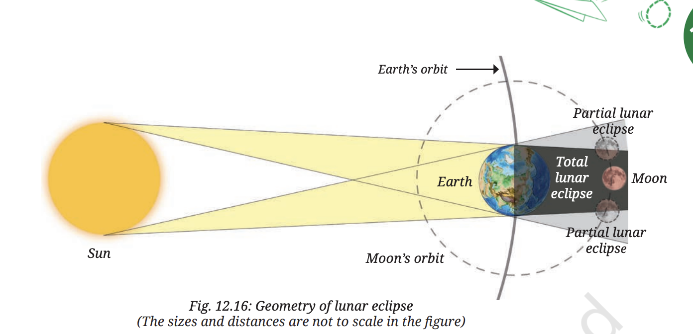
Fig. 12.16 — Arrangement of Sun, Earth, and Moon during a lunar eclipse
🌑 Total Lunar Eclipse
Moon is completely in the Earth's shadow. The bright disc of the Moon starts to appear dark red in colour (Blood Moon) and stays that way until the Moon moves out of the shadow.
🌗 Partial Lunar Eclipse
Part of the Moon is in the Earth's shadow and the rest is visible. Unlike a solar eclipse, a lunar eclipse is safe to watch with the naked eye.
📌 In a Nutshell
The Earth rotates on its own axis in about 24 hours.
The Earth's rotation from West to East causes day and night as well as the apparent motion of the Sun, the Moon, and the stars.
The Earth revolves around the Sun and takes nearly 1 year to complete a revolution.
The Earth's axis of rotation is not upright with respect to the orbit, but is tilted.
Seasons occur because of the tilt of the Earth's axis of rotation and its spherical shape.
A solar eclipse occurs when the Moon is in the path of the Sun as seen from the Earth, and sunlight is blocked from reaching the Earth.
A lunar eclipse occurs when the Earth comes in between the Sun and the Moon, blocking sunlight from reaching the Moon.
✏ Multiple Choice Questions — 20 Questions
Click an option to check instantly! Covers all topics.
Q1
The Sun is a ___
✅ Star. The Sun is a star — it produces its own light and heat through nuclear fusion. It is the nearest star to Earth.
Q2
How long does sunlight take to reach Earth?
✅ 8 minutes 20 seconds. Light travels at ~3,00,000 km/s; the Sun is ~15 crore km away → takes 8 min 20 s to reach Earth.
Q3
Earth's axis is tilted at an angle of ___
✅ 23.5°. Earth's axis is tilted 23.5° from the perpendicular to its orbital plane. This tilt causes the seasons.
Q4
Day and night are caused by Earth's ___
✅ Rotation on its axis. Earth spins (rotates) on its axis once every 24 hours, causing the alternation of day and night.
Q5
The Summer Solstice in the Northern Hemisphere is on ___
✅ 21 June. On 21 June, the Northern Hemisphere is tilted towards the Sun — the longest day in the NH (Summer Solstice).
Q6
The Moon's distance from Earth is approximately ___
✅ 3,84,400 km. The average distance from Earth to the Moon is about 3.84 lakh km (3,84,400 km).
Q7
The Moon's gravity is ___ that of Earth
✅ 1/6. The Moon's gravity is 1/6th of Earth's. That's why astronauts could make huge jumps on the Moon!
Q8
The Moon completes one revolution around Earth in ___
✅ 27.3 days. The Moon takes 27.3 days to orbit Earth (sidereal period). The lunar month (new moon to new moon) is 29.5 days.
Q9
Solar eclipse occurs on ___
✅ New Moon day (Amavasya). Solar eclipse occurs when the Moon comes between the Sun and Earth, which happens only during New Moon.
Q10
During a lunar eclipse, the Moon appears ___
✅ Reddish (Blood Moon). Earth's atmosphere scatters blue light and lets red light through, which falls on the Moon — making it appear red.
Q11
Spring tides occur when ___
✅ Sun, Moon, Earth are in a line. Spring tides occur on New Moon and Full Moon when all three are aligned — gravitational forces add up.
Q12
The Sun's energy is produced by ___
✅ Nuclear fusion. In the Sun's core, hydrogen nuclei fuse to form helium, releasing enormous energy (E=mc²).
Q13
First human to walk on the Moon was ___
✅ Neil Armstrong. Neil Armstrong became the first human to walk on the Moon on 20 July 1969 (Apollo 11 mission).
Q14
Dark, cooler areas on the Sun's surface are called ___
✅ Sunspots. Sunspots are cooler (~3700°C vs 5500°C) regions on the Sun's photosphere, appearing dark due to intense magnetic activity.
Q15
We always see the same face of the Moon because ___
✅ Moon's rotation period equals its revolution period (27.3 days). This synchronous rotation means one face always points toward Earth.
Q16
Which day has equal day and night everywhere on Earth?
✅ 21 March and 23 September are the equinoxes — day and night are equal (12 hours each) everywhere on Earth.
Q17
The lunar month (one complete phase cycle) is ___
✅ 29.5 days (synodic month). This is the time from one New Moon to the next New Moon — the complete phase cycle.
Q18
Neap tides are weaker because ___
✅ Sun and Moon pull at right angles. During Quarter Moons, the Sun's and Moon's tidal forces act in different directions, partially cancelling each other.
Q19
An annular solar eclipse occurs when ___
✅ Moon appears smaller (far from Earth) — ring of Sun visible. When Moon is near apogee, it looks smaller and doesn't fully cover the Sun — a ring (annulus) of sunlight appears.
Q20
The main composition of the Sun by percentage is ___
✅ ~70% Hydrogen, ~28% Helium. The remaining ~2% is made up of heavier elements like oxygen, carbon, iron, etc.
1 Mark Questions
1MWhat is a star?
A star is a huge ball of hot, glowing gas that produces its own light and heat through nuclear fusion. The Sun is the nearest star to Earth.
1MDefine rotation of the Earth.
The spinning of the Earth on its own imaginary axis from West to East is called rotation. One complete rotation takes 24 hours (1 day) and causes day and night.
1MWhat is revolution of the Earth?
The movement of the Earth around the Sun in a fixed elliptical orbit is called revolution. It takes 365 days and 6 hours (one year) and is responsible for change of seasons.
1MWhat is a natural satellite?
A natural satellite is a celestial body that revolves around a planet. The Moon is Earth's only natural satellite. It revolves around the Earth in 27.3 days.
1MWhat are sunspots?
Sunspots are dark, cooler areas that appear on the surface (photosphere) of the Sun. They have a temperature of about 3,700°C compared to the surrounding ~5,500°C, so they appear darker. They are caused by intense magnetic activity.
1MWhat is an equinox?
An equinox is a day when day and night are of equal duration (12 hours each) everywhere on Earth. There are two equinoxes per year — 21 March (spring/vernal equinox) and 23 September (autumn equinox).
1MWhat are tides?
Tides are the periodic rise and fall of sea water level. They are primarily caused by the gravitational pull of the Moon on Earth's oceans. There are usually 2 high tides and 2 low tides each day.
1MName the first person to land on the Moon.
Neil Armstrong was the first person to land on the Moon on 20 July 1969, during the Apollo 11 mission. Edwin "Buzz" Aldrin was the second astronaut to walk on the Moon during the same mission.
2 Mark Questions
2MDistinguish between rotation and revolution of the Earth.
Rotation: Spinning on its own axis | Direction: West to East | Time: 24 hours | Causes: Day and Night
Revolution: Orbiting around the Sun | Path: Elliptical | Time: 365¼ days | Causes: Change of Seasons
The key difference: rotation is spinning in place; revolution is moving around the Sun.
2MWhy does the Moon show phases?
The Moon shows phases because:
(1) The Moon does not produce its own light — it only reflects sunlight
(2) As the Moon orbits Earth over 29.5 days, we see different portions of its sunlit side from Earth
When Moon is between Sun and Earth (New Moon) → dark side faces us → not visible
When Earth is between Sun and Moon (Full Moon) → entire lit side faces us → fully visible
2MDistinguish between solar and lunar eclipse.
Solar Eclipse: Moon comes between Sun and Earth | New Moon day | Moon's shadow on Earth | Dangerous to observe directly
Lunar Eclipse: Earth comes between Sun and Moon | Full Moon day | Earth's shadow on Moon | Moon appears reddish | Safe to observe
2MWhat are spring tides and neap tides?
Spring Tides: Occur on New Moon and Full Moon days when Sun, Moon and Earth are in a straight line. Gravitational forces of Sun and Moon combine → highest high tides and lowest low tides.
Neap Tides: Occur during First and Last Quarter when Sun and Moon are at right angles to Earth. Their gravitational forces partially cancel → weaker tides (lower high tides, higher low tides).
2MWhy is the same face of the Moon always visible from Earth?
The same face of the Moon is always visible from Earth because the Moon's period of rotation equals its period of revolution — both are 27.3 days. This is called synchronous rotation. As a result, the Moon completes exactly one spin for every orbit around Earth, keeping one face permanently towards Earth.
2MWhat causes seasons on Earth?
Seasons are caused by the tilt of Earth's axis (23.5°) and Earth's revolution around the Sun. When the Northern Hemisphere tilts towards the Sun → summer in NH. When it tilts away → winter in NH. Near equinoxes (21 March, 23 September), neither pole tilts towards Sun → equal day and night everywhere.
3 Mark Questions
3MDescribe the structure and composition of the Sun.
The Sun is a massive ball of hot, glowing gas:
Composition: ~70% Hydrogen, ~28% Helium, ~2% heavier elements
Layers:
Core: Temperature ~1.5 crore °C — nuclear fusion occurs here
Radiative zone: Energy moves outward as radiation
Convective zone: Hot plasma rises, cools, sinks — convection currents
Photosphere: Visible surface; ~5500°C; sunspots visible here
Sunspots: Dark cooler areas (~3700°C) caused by magnetic activity; 11-year cycle
3MExplain the 8 phases of the Moon with a diagram description.
The Moon goes through 8 phases in one lunar month (29.5 days):
1. New Moon (Amavasya): Moon between Sun and Earth — sunlit side away from us — not visible
2. Waxing Crescent: Small sliver of light visible on the right (waxing = growing)
3. First Quarter: Right half of Moon illuminated (Half Moon)
4. Waxing Gibbous: More than half visible and growing
5. Full Moon (Purnima): Earth between Sun and Moon — entire lit face visible
6. Waning Gibbous: More than half visible but shrinking
7. Last Quarter: Left half illuminated (Half Moon)
8. Waning Crescent: Small sliver on left — back to New Moon
Why phases occur: Moon doesn't emit light; reflects sunlight. Different portions of the lit half are visible as Moon orbits Earth.
3MExplain the different types of solar eclipse.
A solar eclipse occurs when the Moon comes between the Sun and Earth on a New Moon day. There are three types:
Total Solar Eclipse: The Moon completely covers the Sun. Viewers in the umbra (inner shadow) see total darkness. Lasts only a few minutes. The corona of the Sun becomes visible.
Partial Solar Eclipse: Only part of the Sun is covered by the Moon. Viewers in the penumbra (outer shadow) see this.
Annular Solar Eclipse: Moon is at its farthest point from Earth (apogee) — appears smaller than the Sun — doesn't fully cover it. A ring (annulus) of sunlight appears around the Moon.
⚠ Never look at a solar eclipse with naked eyes — use certified solar filters.
3MDescribe the surface features of the Moon.
The Moon's surface has several distinctive features:
Craters: Circular depressions formed by meteorite impacts over billions of years. Some are hundreds of km wide. No atmosphere → no erosion → craters are preserved.
Maria (singular: Mare): Large dark plains on the Moon's surface. Formed when ancient meteorite impacts caused volcanic eruptions that filled basins with lava. The word "mare" is Latin for "sea" — early astronomers mistook them for seas.
Mountains (Highlands): Light-coloured elevated regions, older than maria. Some mountains are taller than the Himalayas.
Rilles: Long, narrow valleys or channels on the surface.
The Moon has no atmosphere, no liquid water, and no life. Extreme temperatures: +127°C (day) to −173°C (night).
5 Mark Questions
5MExplain how eclipses are formed. Describe both solar and lunar eclipses in detail.
Eclipse occurs when one celestial body moves into the shadow of another. For Earth, eclipses involve the Sun, Moon, and Earth.
Solar Eclipse:
Occurs on New Moon (Amavasya) when Moon comes between Sun and Earth
Moon's shadow has two parts: Umbra (darker inner shadow) and Penumbra (lighter outer shadow)
Total solar eclipse — viewer in umbra — Sun completely hidden — corona visible — lasts ~7.5 min max
Partial solar eclipse — viewer in penumbra — Sun partially covered
Annular eclipse — Moon near apogee (far from Earth), appears smaller — ring of Sun visible
⚠ Dangerous — use ISO-certified solar filters to observe
Lunar Eclipse:
Occurs on Full Moon (Purnima) when Earth comes between Sun and Moon
Earth's shadow falls on the Moon
Total lunar eclipse — Moon fully in Earth's umbra — appears reddish ("Blood Moon") because Earth's atmosphere scatters blue light and refracts red light onto Moon
Partial lunar eclipse — only part of Moon in umbra
Penumbral eclipse — Moon passes through penumbra only — subtle darkening
✅ Completely safe to watch with naked eyes
Why not every month? Moon's orbit is tilted ~5° to Earth's orbital plane, so usually Moon passes above or below the shadow. Eclipses occur only when all three bodies precisely align (Syzygy).
5MDescribe the Earth's rotation and revolution and their effects in detail.
A. Rotation:
Earth spins on its own axis from West to East (anticlockwise when viewed from North Pole)
One complete rotation = 24 hours
Effects:
Causes day and night — sunlit side = day, dark side = night
Sun appears to rise in East and set in West
Causes slight flattening of Earth at poles (bulging at equator)
Affects ocean currents and wind patterns (Coriolis effect)
The boundary between day and night: Circle of Illumination
B. Revolution:
Earth orbits the Sun in an elliptical path — takes 365 days 6 hours
Extra 6 hours → Leap Year every 4 years (366 days)
Earth's axis is tilted at 23.5°
Effects — Seasons:
21 June (Summer Solstice): NH tilted towards Sun → longest day in NH; SH has winter
22 December (Winter Solstice): NH tilted away from Sun → shortest day in NH; SH has summer
21 March (Spring Equinox): Neither pole tilted → Day = Night everywhere
23 September (Autumn Equinox): Neither pole tilted → Day = Night everywhere
Difference: Rotation = spinning in place (24 hrs, causes day/night). Revolution = orbiting the Sun (365¼ days, causes seasons).
5MExplain tides — their cause, types and significance.
Tides are the periodic rise and fall of sea water level caused by the gravitational pull of the Moon and the Sun.
Cause:
The Moon exerts a gravitational pull on Earth's water. The side of Earth facing the Moon experiences a stronger pull → water bulges outward = high tide
Opposite side also gets a high tide due to inertial effect (centrifugal force from Earth-Moon rotation)
The Sun also pulls on oceans but its effect is smaller because it is much farther away
Result: usually 2 high tides and 2 low tides every 24 hours
Types:
Spring Tides: New Moon or Full Moon — Sun, Moon, Earth in line — forces add up → highest high tides, lowest low tides
Neap Tides: First/Last Quarter — Sun and Moon at 90° to Earth — forces partially cancel → weaker tides
Significance / Uses:
Tidal energy: Water movement drives turbines → electricity generation (renewable, clean energy)
Navigation: Ships use high tides to navigate into shallow ports and harbours
Fishing: Fishermen plan their trips according to tidal patterns
Salt production: Seawater trapped at high tide, salt extracted as water evaporates
Marine ecology: Tidal zones support unique ecosystems
5MWrite a detailed note on the Moon — its properties, phases, and exploration.
The Moon — Earth's Natural Satellite
Basic Properties:
Distance from Earth: 3,84,400 km
Diameter: 3,476 km (~1/4 of Earth's 12,742 km)
Gravity: 1/6th of Earth's
No atmosphere, no liquid water, no life
Temperature: −173°C (night) to +127°C (day)
Rotation = Revolution = 27.3 days → same face always faces Earth
Lunar month: 29.5 days
Surface Features:
Craters: Impact depressions; preserved due to no atmosphere; some hundreds of km wide
Maria: Dark lava plains, mistaken for seas by early astronomers
Mountains and Highlands: Some taller than Himalayas
Phases of the Moon: 8 phases over 29.5 days (New Moon → Full Moon → New Moon). Caused by Moon reflecting sunlight and changing position relative to Earth and Sun. Moon waxes (grows) from New to Full, then wanes (shrinks) from Full to New.
Moon and Tides: Moon's gravity causes tides in Earth's oceans — 2 high tides and 2 low tides per day.
Exploration:
Apollo 11 (1969): Neil Armstrong & Buzz Aldrin — first humans on Moon (20 July 1969)
Chandrayaan-1 (2008): India's first lunar mission — discovered water molecules on Moon's surface
Chandrayaan-3 (2023): India's Vikram lander and Pragyan rover landed near the South Pole of Moon — India became 4th country to land on Moon